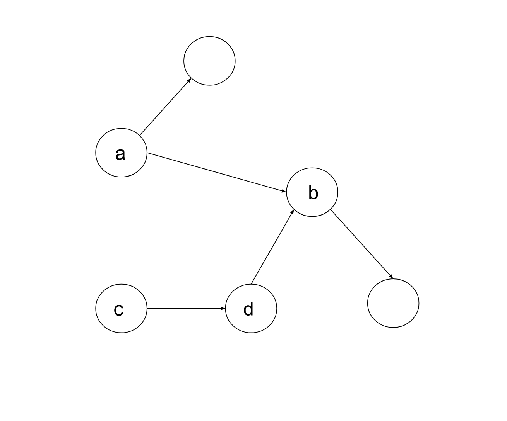

Intuition
We have NN vertices connected via EE directed edges, and there is no cycle. We need to return the minimum set of vertices that are required so that all the vertices are reachable from these vertices.
Let's first find out the vertices we are sure won't be in the final set. Consider the below figure, there is a
directed edge from vertex a to b; should vertex b be in the final answer set?
No, if we include a we can reach b from it using this edge. Similarly, consider the edge
c -> d; the vertex d will also not be present in the answer as we can shrink the
required vertices group from {c, d} to just c and then traverse tod from it.

From this discussion, one thing is clear: any vertex that has an edge in-coming from some other vertex should not be part of the answer.
The next question concerns the vertices that don't have an incoming edge. Are these all required and will we need to include all of them, or will only a few be sufficient?
Let's try to answer the first question, are all those vertices that don't have an incoming edge required? If a vertex
doesn't have any edge that ends on it, this implies there is no way to reach it from any other vertex. The only way
to cover these vertices is to include them in the set. Hence, all vertices that have no in-coming edge or have the
in-degree as 0 will be included in the answer.
The second question is, are these vertices enough? Will we be able to cover the remaining vertices using these vertices? Think of any vertex that we didn't include, this vertex would have at least one incoming edge, i.e., instead of including it, we will consider including the vertices that can lead to this. All these vertices again have two possibilities; first, they don't have any incoming edge, in which case it would already be in our answer set, the second, they have an incoming edge in which we shouldn't include it. Hence, every vertex that has not been included; an edge from the included vertices can lead to it, and thus all vertices are reachable in this set of vertices.
Algorithm
isIncomingEdgeExists of length NN
which store true if there is an incoming edge to it, false otherwise. Initialize it with every
entry as false.
edges, and for every edge, mark the second vertex as true in
the list isIncomingEdgeExists.
isIncomingEdgeExists and include all the vertices that have a
false value in the final answer list requiredNodes.
requiredNodes.Implementation
Java
class Solution {
public List findSmallestSetOfVertices(int n, List> edges) {
// List to signify if the vertex has an incoming edge or not.
boolean[] isIncomingEdgeExists = new boolean[n];
for (List edge : edges) {
isIncomingEdgeExists[edge.get(1)] = true;
}
List requiredNodes = new ArrayList();
for (int i = 0; i < n; i++) {
// Store all the nodes that don't have an incoming edge.
if (!isIncomingEdgeExists[i]) {
requiredNodes.add(i);
}
}
return requiredNodes;
}
}
C++
class Solution {
public:
vector findSmallestSetOfVertices(int n, vector>& edges) {
// List to signify if the vertex has an incoming edge or not.
vector isIncomingEdgeExists(n, false);
for (vector& edge : edges) {
isIncomingEdgeExists[edge[1]] = true;
}
vector requiredNodes;
for (int i = 0; i < n; i++) {
// Store all the nodes that don't have an incoming edge.
if (!isIncomingEdgeExists[i]) {
requiredNodes.push_back(i);
}
}
return requiredNodes;
}
};
Complexity Analysis
Here NN is the number of vertices and EE is the number of edges.
Time complexity: O(N+E)O(N + E).
We first iterate over every one of EE
edges to mark the vertex in the list isIncomingEdgeExists, then we iterate over the vertices to
see if it's required or not. Hence, the total time complexity equals O(N+E)O(N + E).
Space complexity: O(N)O(N).
The only space required is the list isIncomingEdgeExists of size NN
to store if vertices have an incoming edge or not. The other list, requiredNodes is to store
the output, which is not considered part of space complexity.